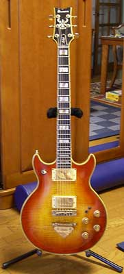
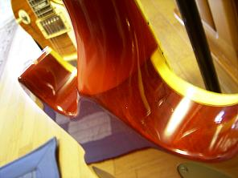
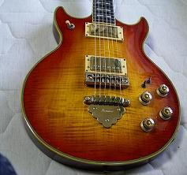
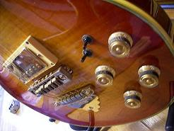
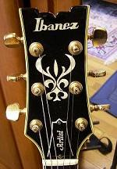

|  |
IBANEZ
AR-300CS |
||||||||
| フレームで表示されてない場合はコチラをクリック | |||||||||
| シリアルはK８２４１１３、ということで82年製AR、中古から最近はヴィンテージと言われるようにってきたっぽい。トラ目は角度によってはしっかり見えるがぱっと見ではプレーンに見えるぐらいで、あまりめだたない。
結構古いものなので結構小さい傷や剥げがところどころにそんざいする。４弦ペグがくるいやすく交換を検討中。PUカバーのフロントは別の新品のものに交換されている。SUPER58かは確認すらしてませんｗ 音はやっぱ中音域？のギターな気がします。レスポより重低音は響かない分、伸びのあるさわやかな感じ。トライサウンドはシングル、ハム、パラレルを切り替えられるスイッチだが、そんなに顕著には現れない、微調整として役立ちそうである。 |
|||||||||
| ・ ネックはセットネックだがスムーズに接合されている。ネックの太さはRGよりは少し太いぐらいで、レスポールと比べるとすこしほそい印象をもつ。 |  | ||||||||
|  | |||||||||
|  | |||||||||
|  | |||||||||